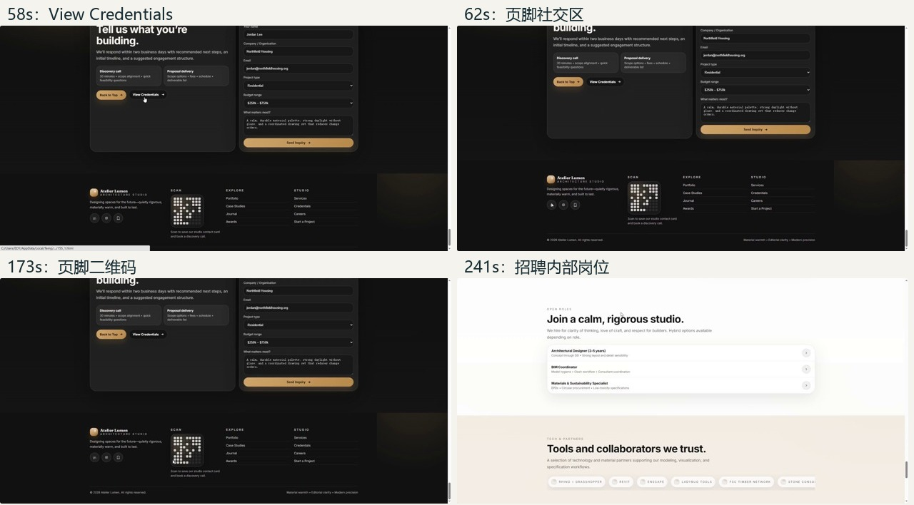
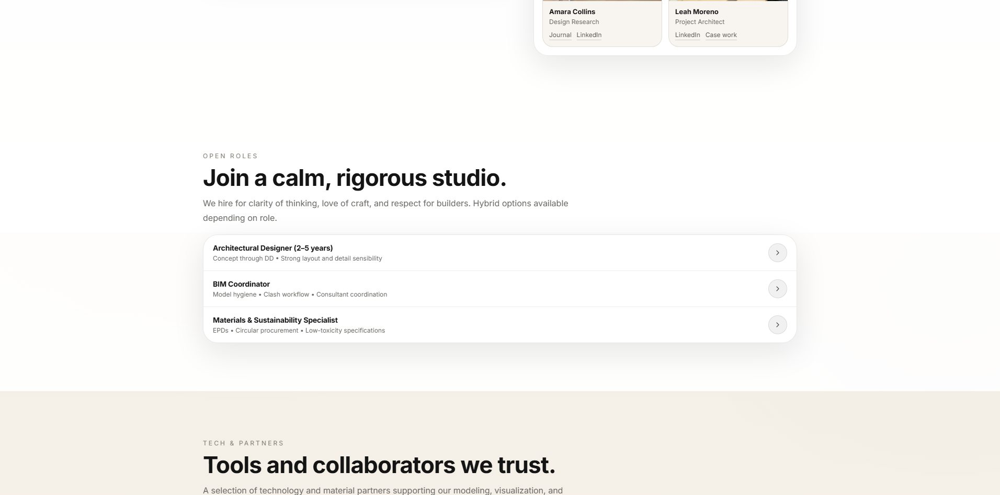
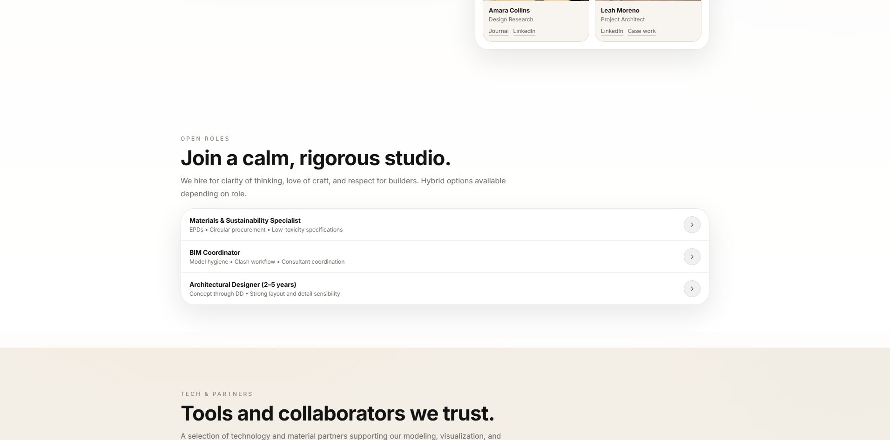
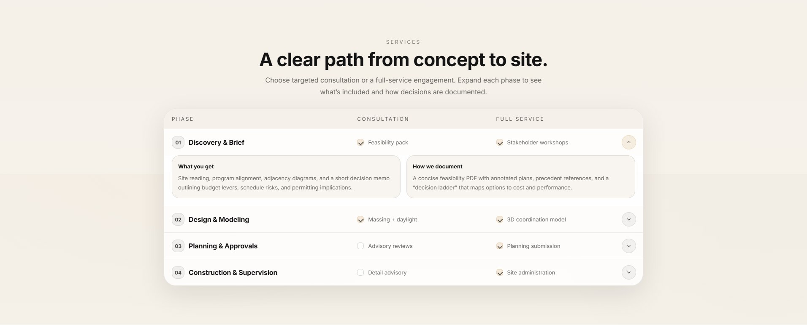
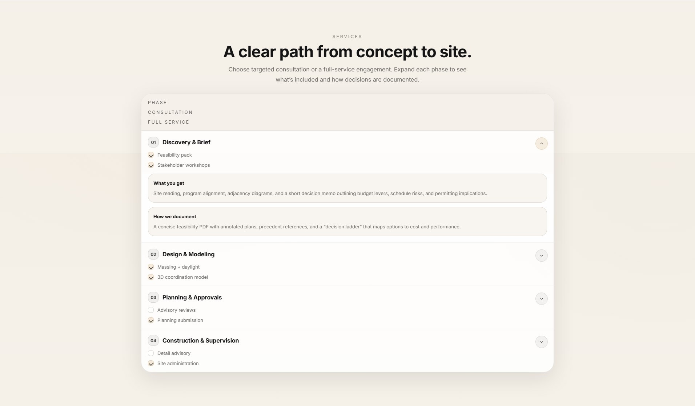
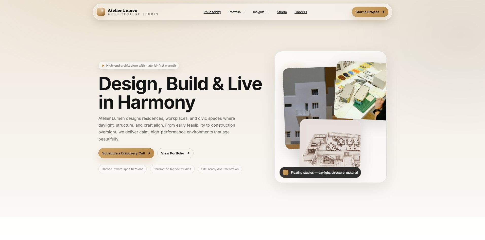
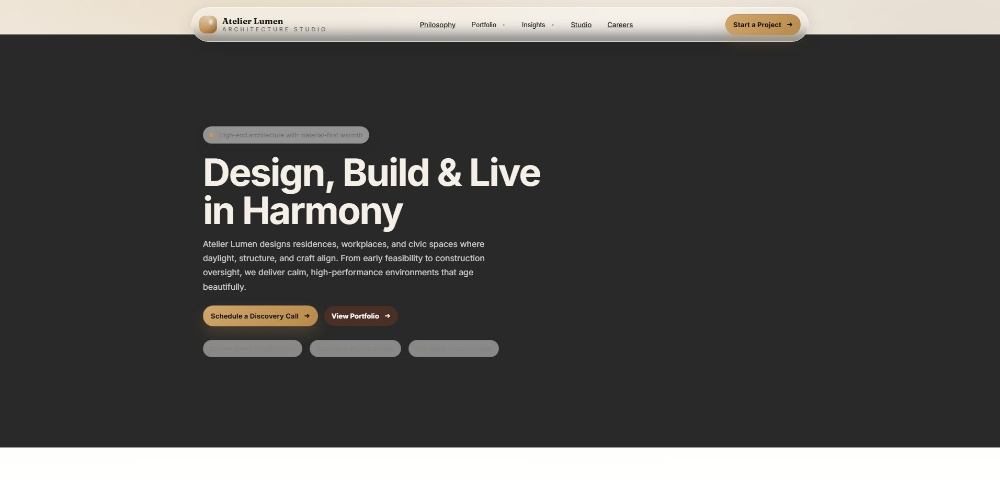

听懂“这个”，找准页面，完成二十步编辑
一段中文讲解录屏反复滚动长页面、指向元素、提出修改又撤销。Agent需要把语音与光标对齐，维护最终意图，并交付完整网页。
中文录屏 4分03秒20条指令 · 4条被撤销Sol · xhigh联网环境评分已审计一、任务定义
委托场景：对一份已有建筑事务所网站做精确修改。语言只说“这个”“这些”“这里”，具体元素由录屏中的光标确定；后续撤销应覆盖前序要求。
原始请求视频的压缩预览，保留中文音轨和完整时序；下载原始录屏。视频内容来自 Omni2Web 118。
| 材料 / 条件 | 内容 |
|---|---|
| 源网页 | Atelier Lumen 建筑事务所长页面，WebVR test/155/155_1.html；约133.6 KB HTML。 |
| 中文录屏 | 243.2秒，20条编辑指令；弱指代“这个／这些”与光标、滚动配合。 |
| 直出 | 人工转写 + 最多95张644px时间戳帧；实际约0.391fps，一次请求，不调用工具。 |
| Agent-VL | 源HTML、图片副本、视频与20行人工转写（没有时间标注）；视频按静音处理，自主抽帧与渲染。 |
| Agent-omni | 源HTML、图片副本、带音轨视频；不给人工转写，使用本地Whisper large-v3，可获取段级、词级时间标注并重听。 |
| 共同条件 | Sol xhigh；Codex CLI 0.166.0-alpha.5.1；NJU Link Responses。agent全程联网，可装依赖、检索素材；禁止取数据集标注和其他运行答案。 |
| 交付 | 完整edited.html及其使用的本地资源。原三条运行均正常退出；联网复跑进行中，尚无复跑分数。 |
展开20条中文请求原文
把这个改成左侧 logo、中间留空、右侧将所有菜单项和'Start a Project'按钮纵向堆叠的竖排布局 把这个和这个互换一下位置 把这个背景改成深炭灰色，这个文字改成米白色，这个改成浅灰色并移除这个的浅色阴影 把这个边框去掉，这个背景改成深棕色，这个文字改成白色 把这个移动到这个位置 把这个恢复成原来的样子 把这个改成单列纵向堆叠的布局 把这个改成玻璃幕墙高层建筑仰拍的静态照片 把这些全部隐藏掉 把这个背景改成浅米色和细深棕色边框，这个文字加粗并改为深棕色 把这个和这个互换一下位置 把这个和这个恢复成原来的位置，这个恢复成原来的样子 把这些改成深棕色 把这个改成两列网格布局 把这个移动到这个位置 把这个背景改成深棕色，这个文字改成亮金色，这些分隔线改为半透明金色 把这个直接删除掉 把这个背景改成深墨绿色，这个标题改成亮金色，这个文字改成浅灰绿色 把这个恢复成原来的样子 把这个和这个互换一下位置
需要交付什么
只修改用户要求的部分，保留其余内容和结构；对换位、批量样式、图片替换、隐藏、布局及多次撤销，执行最后仍有效的意图。Agent自行决定抽帧密度、裁剪、重听与浏览器自检，没有额外限制总轮数、总时长或抽帧数。
验收与评分修复
EFS沿用定位10%、编辑落实50%、无损20%、修订20%。裁判为NJU Link的 gpt-6-sol / high；本页并非论文使用Gemini裁判的官方排行榜。
哪些评分问题已修复，哪些保留不确定性？
- 核对图片内容：同图URL本地化不算换图；真实错配资源仍扣分。
- 读取浏览器计算样式：检查最终CSS和实际布局，避免只看早期规则。
- 修正第20步为OPEN ROLES内部首、第三岗位交换。
- 第4、5、9、10、15步不进入审计分。对应争议变动也不能因为从评分子集排除，就被算作额外损坏。
- 修复移动文本被差分误识为丢失，以及media query被压平造成的假变化。
- v3再修复合法卡片换位、Garden Stair整卡删除中的Residential误判；同一错误不再同时扣编辑／修订和无损。
- 同一语义变化匿名合并、共享无损标签，避免同样的页脚修改在不同模型条件下被判反；补查直出的整段区块误换位。
v3无损分母使用语义变化组数量，保留原公式的严重度权重；它是另一个诊断版本。查看20步审计说明 · 共享无损判定 · 浏览器复核证据

58–62秒与173秒的移动请求发生在页面底部；241秒光标指向招聘列表内部。范围不明确的条目按争议处理。
二、运行结果
| 输入与运行条件 | 原始 EFS | 审计诊断分 | 定位 | 编辑落实 | 无损 | 修订 | 求解耗时 |
|---|---|---|---|---|---|---|---|
| 直出 | 56.44 | 69.43 | 81.82 | 62.50 | 83.33 | 66.67 | 14分13秒 |
| Agent-VL | 43.58 | 76.85 | 90.91 | 75.00 | 84.62 | 66.67 | 17分49秒 |
| Agent-omni | 37.55 | 62.10 | 81.82 | 62.50 | 80.00 | 33.33 | 33分46秒 |
所有模型均为同一Sol，xhigh；三份交付均正常完成。定位、编辑落实、无损、修订显示百分制；原始EFS与审计诊断分使用不同评分范围，不能把差值当作模型能力提升，也不与论文全量均分比较。
逐项通过矩阵（23个计分项中的22个定位／执行／修订项）
| 步骤 / ID | 类型 | 有效要求 | 直出 | Agent-VL | Agent-omni |
|---|---|---|---|---|---|
| 1 / r1 | 定位 | 该元素应被识别并作为编辑目标 | ✗ | ✗ | ✗ |
| 1 / r2 | 执行 | 第一屏顶部导航栏由当前一行横排的菜单项布局，改为左侧 logo、中间留空、右侧将所有菜单项和'Start a Project'按钮纵向堆叠的竖排布局 | ✗ | ✗ | ✗ |
| 6 / r11 | 定位 | 该元素应被识别并作为编辑目标 | ✓ | ✓ | ✓ |
| 6 / r12 | 修订 | 撤回第3步的修改，将第一屏 HERO 区域配色恢复为原来的浅色背景、深色标题和正文 | ✗ | ✗ | ✗ |
| 11 / r21 | 定位 | 该元素应被识别并作为编辑目标 | ✓ | ✓ | ✗ |
| 11 / r22 | 执行 | 将页面约25%处 PORTFOLIO 区域中第1个项目卡片'Ridgehouse Courtyard Residence'与第3个项目卡片'Riverline Civic Hall'的整个区块位置互换 | ✓ | ✓ | ✗ |
| 12 / r23 | 定位 | 该元素应被识别并作为编辑目标 | ✓ | ✓ | ✓ |
| 12 / r24 | 修订 | 撤回第2步和第7步的修改，将 PHILOSOPHY 区域与 STUDIO 区域恢复原来的上下位置，并将 SERVICES 区域表头恢复为三列网格布局 | ✓ | ✓ | ✗ |
| 13 / r25 | 定位 | 该元素应被识别并作为编辑目标 | ✓ | ✓ | ✓ |
| 13 / r26 | 执行 | 将页面约65%处 JOURNAL 内容区域顶部所有筛选按钮（All、Materials、Daylight、Process、Sustainability）的文字颜色改为深棕色 | ✗ | ✗ | ✗ |
| 14 / r27 | 定位 | 该元素应被识别并作为编辑目标 | ✓ | ✓ | ✓ |
| 14 / r28 | 执行 | 将页面约65%处 JOURNAL 文章网格由当前的三列网格布局改为两列网格布局 | ✓ | ✓ | ✓ |
| 16 / r31 | 定位 | 该元素应被识别并作为编辑目标 | ✓ | ✓ | ✓ |
| 16 / r32 | 执行 | 对页面最底部 FOOTER 区域进行批量修改：背景色由深黑改为深棕色，所有栏目标题'Explore / Studio / Scan'文字改为亮金色，所有链接文字下方的分隔线改为半透明金色 若Scan已因争议移动操作移出footer，不因其位置或footer缺少Scan标题单独判失败；检查保留的栏目及相应标题自身配色。 | ✓ | ✓ | ✓ |
| 17 / r33 | 定位 | 该元素应被识别并作为编辑目标 | ✓ | ✓ | ✓ |
| 17 / r34 | 执行 | 删除页面约70%处 CASE STUDIES 区域中第5张卡片'Garden Stair • Multi-family Upgrade'整个案例卡片 | ✓ | ✓ | ✓ |
| 18 / r35 | 定位 | 该元素应被识别并作为编辑目标 | ✓ | ✓ | ✓ |
| 18 / r36 | 执行 | 页面约40%处 AWARDS 奖项轮播区域配色修改：四张奖项卡片背景由深黑改为深墨绿色，卡片内标题文字改为亮金色，正文描述文字改为浅灰绿色 | ✓ | ✓ | ✓ |
| 19 / r37 | 定位 | 该元素应被识别并作为编辑目标 | ✓ | ✓ | ✓ |
| 19 / r38 | 修订 | 撤回第8步的修改，将 PROJECT HIGHLIGHT 区域'Urban Oasis Tower'右侧背景图恢复为原来的图片 | ✓ | ✓ | ✓ |
| 20 / r39 | 定位 | 识别这两个岗位条目为交换目标。 | ✗ | ✓ | ✓ |
| 20 / r40 | 执行 | 将OPEN ROLES列表中第一个Architectural Designer与第三个Materials & Sustainability Specialist岗位交换，BIM Coordinator仍居中；不要求外层careers/partners区块交换。 | ✗ | ✓ | ✓ |
悬停勾叉可看裁判具体理由；完整理由和无损差分见各条件JSON下载。
查看实际交付
实际HTML与资源的隔离预览；第三方远程图片可用性可能变化。原始提交打包保留在下载区。
三、运行轨迹
两个agent从独立工作区开始，自主抽帧、裁剪、转写、编辑及渲染。完整保留可见回复、执行命令和工具输出；不把CLI未记录的看图调用计为零，也不展示隐藏推理。
| 条件 | 调用 | 联网搜索 | 语音工具 | 轨迹入口 |
|---|---|---|---|---|
| 直出 | 1次请求 | 无Agent工具 | 无 | 查看请求配置 |
| Agent-VL | 21条完成的shell命令 | 0次搜索 | 0次ASR相关执行 | 查看可见轨迹 → |
| Agent-omni | 51条完成的shell命令 | 0次搜索 | 3次ASR相关执行 | 查看可见轨迹 → |
工具轨迹只有执行顺序，没有逐条时间戳。耗时来自进程起止的墙钟时间，包含工具与自查；omni为33分46秒，VL为17分49秒。两者都真实调用Playwright；omni执行了本地Whisper并对片段重听。
四、失败分析


仍有证据支持的失败
三份交付的菜单最终仍为横排；要求恢复的HERO仍是深色；JOURNAL文字仍为白色，深棕色被用于背景。这些由浏览器计算值直接支持。Agent-omni还没有完成项目卡片换位与SERVICES表头恢复；具体以逐项理由为准。
原omni与直出的定位、编辑落实分相同，原因是二者各漏了一次不同的交换：直出漏岗位、omni漏项目。总分相差7.33分，其中6.67分来自omni的SERVICES表头撤销失败，其余0.67分来自无损。浏览器确认原omni表头为一列，源页、直出和VL均为三列；轨迹里的自检只断言了折叠交互，没有断言该表头布局已恢复。


第1步 · 菜单纵排没有落实
- 直出：浏览器测得 .nav 的 flex-direction 仍为 row，菜单项横向排列，CTA 仍在同一横排，未形成右侧竖向堆叠。
- Agent-VL：浏览器中 .nav 的 flex-direction 仍为 row；菜单项横排，“Start a Project”仍在同一导航行，未纵向堆叠。
- Agent-omni：浏览器中 .topbar .nav 仍为横向 flex，菜单项位于同一行，Start a Project 按钮仍在右侧同一行，未纵向堆叠。
第6步 · 要求撤销，深色主题仍保留
- 直出：HERO 背景计算值为 rgb(29, 29, 29)，标题为浅色 rgb(244, 239, 231)，正文为 rgb(209, 209, 209)，未恢复原来的浅背景和深色文字。
- Agent-VL：未恢复原配色：#top 背景现为 rgb(38,38,38)，标题为 rgb(245,241,232)，正文为 rgb(204,204,204)；原版为浅色背景、深色标题和正文。
- Agent-omni：#top 的计算背景为 rgb(41, 41, 41)，h1 为浅色 rgb(244, 239, 231)，正文为浅灰 rgb(211, 211, 211)，未恢复原有浅色背景与深色文字。
第13步 · 改了背景，文字仍是白色
- 直出：五个 JOURNAL 筛选按钮的计算文字颜色均为 rgb(255, 255, 255)；深棕色 rgb(75, 48, 36) 被设为背景色，而非文字色。
- Agent-VL：五个按钮的计算文字颜色均为 rgb(255,255,255)，深棕色 rgb(74,48,36) 被用于背景，未将文字改为深棕色。
- Agent-omni：五个 JOURNAL 筛选按钮的计算文字颜色均为 rgb(255, 255, 255)；深棕色 rgb(74, 48, 36) 被用于背景，而非文字。
第20步 · 岗位互换：原来错扣了两条agent
- 直出：OPEN ROLES 的实际顺序仍为 Architectural Designer、BIM Coordinator、Materials & Sustainability Specialist，首尾岗位没有交换。
- Agent-VL：岗位顺序由 Architectural Designer、BIM Coordinator、Materials & Sustainability Specialist 变为 Materials & Sustainability Specialist、BIM Coordinator、Architectural Designer；各条目的说明与 aria-label 一同移动。
- Agent-omni：roles_order 从 Architectural Designer、BIM Coordinator、Materials & Sustainability Specialist 变为 Materials & Sustainability Specialist、BIM Coordinator、Architectural Designer；BIM Coordinator 仍居中。


如何理解agent的分数
这次复现同时暴露了目标／属性绑定与撤销状态管理问题，以及基准标注、资产可见性和源码差分的测量问题。VL的人工稿没有时间戳；omni的ASR有时间戳，确实有按时间对齐的工具条件，但还要承担识别、分段和任务提取。当前对照不能把这些因素分开，也不能证明omni本身弱于VL。要单测时间对齐，需要固定同一份转写内容，再控制时间标注。
原提示沿用“图片是本地相对路径”的不准确说明，实际源HTML引用远程图片。同配置复跑保留原提示，避免把提示修订与运行波动混在一起；评分仅将验证为同图的本地资源归一。
文件与来源
- 20步评测审计
- 评分协议、范围和输入哈希
- 校准结果
- 人工转写
- 直出逐项结果 · 提交包
- Agent-VL逐项结果 · 提交包
- Agent-omni逐项结果 · 提交包
- v3无损复查脚本
- 任务审计脚本
- v2历史结果：直出 Agent-VL Agent-omni
- 数据来源与许可
任务与录屏：Omni2Web · sample 118；原评分代码：Hanminghao/Omni2Web-evaluation；源网页：WebVR，revision 7917c3a2b44a0838eb0acffb80a38ec6030b49b6。Omni2Web原始贡献为CC BY-NC 4.0；本页标明了评分修订，第三方网页和图片保留各自许可。
更新：2026-11-03 20:52:06（北京时间） · 评分版本 118-audit-v3 · 原三条运行，omni独立联网复跑进行中。